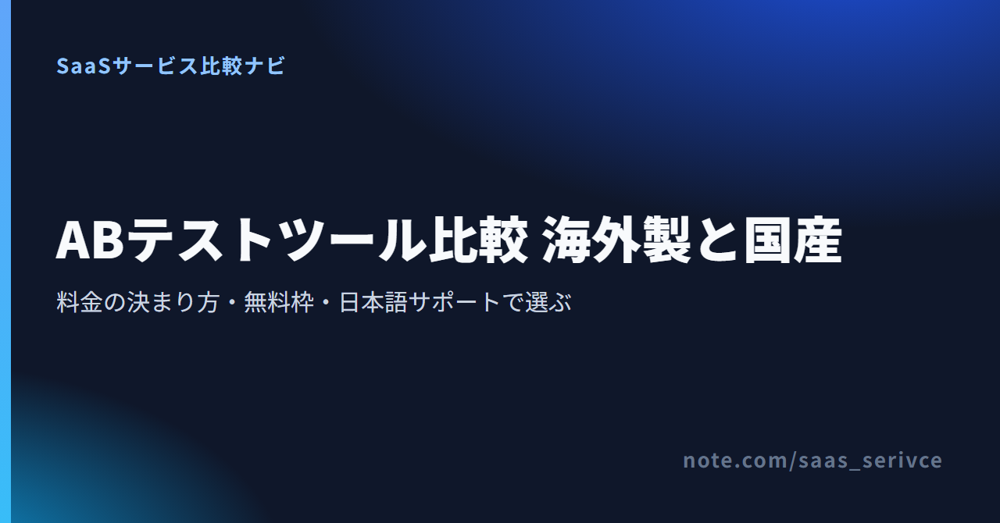
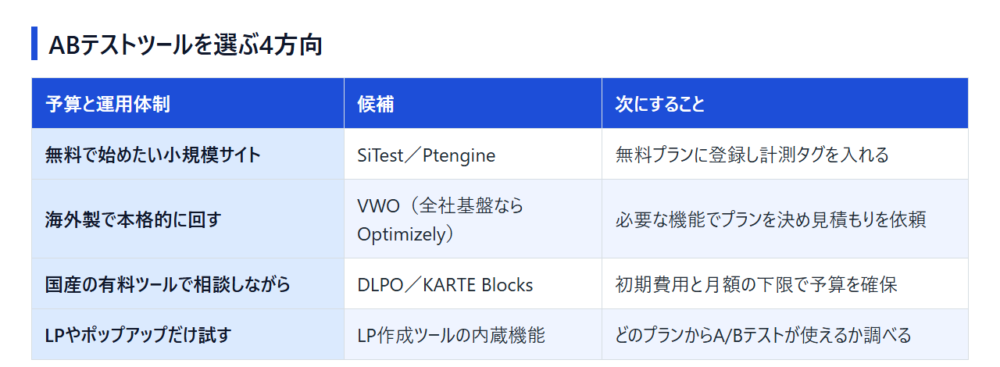
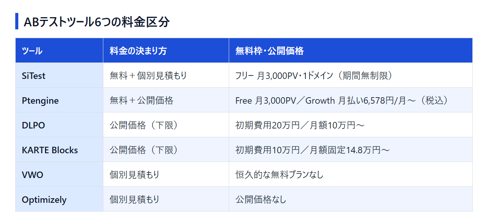

Googleオプティマイズがなくなり、A/Bテストの仕組みを選び直すことになった。あるいは、初めてのA/Bテスト導入を任された。どちらの場合も最初につまずくのは料金の見えにくさで、海外製の代表格は公開価格がなく、国産ツールは無料から月額10万円台まで幅があります。
ここでは海外製のVWO・Optimizelyと、国産のSiTest・Ptengine・DLPO・KARTE Blocksの6つを、料金の決まり方と日本語での支援の受け方で比べます。読み終えるころには、無料で試すか、見積もりを取るか、ランディングページ作成ツールの機能で済ませるかを決められるはずです。
無料で試したい小規模サイトはSiTestかPtengine、海外製で本格的にテストを回すならVWO（全社のデジタル基盤ごと整えるならOptimizely）、国産の有料ツールなら、相談しながら導入するDLPOか、ノーコードでサイトを書き換えながら続けるKARTE Blocksが候補です。 ランディングページ作成ツールでLPを作っている、またはこれから作るなら、そのツールのA/Bテスト機能で足りることもあります。Googleオプティマイズから移る場合も、まずこの4方向のどれに当たるかを決めてください。

SiTestのフリープランは期間の制限がなく、月3,000PV・1ドメインの範囲ならA/Bテストを含む全機能を無料で使えます。
Ptengineは、A/Bテストを担う「Experience」をFreeプランのまま使えます。
VWOは全プランが個別見積もりです。料金ページではプランごとの機能の違いを確かめられます。
どちらも無料プランはなく、初期費用と月額の下限が公開されています。電話窓口とLPOコンサルティングで相談しながら進めたいならDLPO、ビジュアルのノーコードエディター（β版）でサイトの一部を差し替えながらテストを続けたいならKARTE Blocksです。
WordPressなどで作った既存のLPで試すだけなら、SiTestやPtengineの無料枠のほうが費用はかかりません。
機能の多さを比べる前に、テストしたい範囲、編集する人、料金の決まり方、日本語での支援の4点を確かめると、候補は2〜3つまで減ります。
LPをランディングページ作成ツールで作っているなら、LP1枚の見出しやボタンを比べるのはそのツールのA/Bテストで足ります。既存サイトのLPなら、計測タグを入れて使う専用ツールの無料枠から試せます。商品ページやフォーム、トップページなど、サイト全体で継続的にテストしたいなら専用ツールの出番です。
専用ツールには、別URLのページへ振り分けるリダイレクト型と、同じページの一部を書き換える同一URL書き換え型があり、SiTestは両方に対応しています。別ページを用意できないなら、書き換え型が使えるかを見ます。
パターンBの画面を誰が作るかで、運用の負担が変わります。VWOは画面上で直すビジュアルエディターとコードエディターの両方を備え、KARTE Blocksもビジュアルのノーコードエディター（β版）とコードエディターを使えます。PtengineはA/Bテストを担うExperienceにノーコード編集が含まれます。SiTest・DLPO・Optimizelyのエディターの形式は、無料枠やデモで実際に触って確かめてください。
マーケター本人が文言やボタンを変えるなら、ビジュアルエディターの使い勝手を優先して選びます。
料金の出し方は、次の4つに分かれます。
公開価格のツールも、多くは計測PV数で金額が上がるため、自社サイトの月間PVを先に調べておきます。
Ptengineは日本語のメール・ライブチャット・電話と導入支援を用意し、DLPOは電話窓口に加えてLPOコンサルティングも受けられます。海外製のVWOは、日本語での導入支援を国内の販売代理店が担います。SiTestはフリーだとヘルプセンターでの自己解決が中心で、専任サポートはエンタープライズから付きます。OptimizelyとKARTE Blocksは支援の範囲が料金ページからは読み取れないので、デモや問い合わせの段階で聞いておきます。
海外製のVWOとOptimizelyはどちらも個別見積もりで、国産の4つは無料プランの有無と初期費用で入口が分かれます。 並びは「海外製→国産」「国産は無料で始められる順」で、順位ではありません。
[画像を挿入: VWOの公式サイト]
Growthでビジュアル＆コードエディターと多腕バンディットを使え、実験・バリエーション数は無制限です。Proで多変量テストとクロスドメインテスト、EnterpriseでSSOやAPI、24時間サポートが加わります。料金ページから無料トライアルも申し込めます。
2026年9月、VWOはAB Tastyとの統合を発表し、統合ブランド「Wingify」を公開しました。発表によると統合後の顧客は4,000社を超え、既存のVWO・AB Tastyの利用者へのサポートは続きます。「海外3大ツール」と呼ばれてきたVWO・AB Tasty・Optimizelyのうち2つが、同じ会社の製品になりました。
プランの段階は、多変量テストやクロスドメインテスト、SSOが要るかで決まります。テストしたいページ数と月間訪問数は、見積もり額を相談する材料として用意しておきます。
製品群は実験（Agentic Experimentation）、Feature Management、Personalization、CMS、コマースにまたがり、A/Bテストはその一部です。
LP数枚のテストや月間PVが数千のサイトには規模が合いません。VWOと迷ったら、A/Bテストの専用ツールが欲しいのか、デジタル施策の基盤ごと入れ替えたいのかで分けます。
デモを依頼する前に、実験だけを使うのか、CMSやパーソナライズも組み合わせるのかを決めておきます。
[画像を挿入: SiTestの公式サイト]
SiTestはフリープランでも、ヒートマップ、A/Bテスト（リダイレクト型と同一URL書き換え型）、多変量テスト、EFO（入力フォームの改善）まで機能を絞らずに使えます。上限は月3,000PV・1ドメインで、クレジットカードの登録も契約期間の縛りもありません。
最初に無料トライアルを選ぶと30,000PV・2ドメイン・ゴール10個まで広げて試せ、終了後はフリープランに戻ります。UI/UXのコンサルティングは別料金です。フリーの次はエンタープライズしかないため、月3,000PVを超えて使い続けるなら、見積もり制で原則12か月の契約に移ることになります。
まずは月3,000PVに収まるLPや特集ページを1つ選び、フリープランでテストを1本回してみるのが近道です。
[画像を挿入: Ptengineの公式サイト]
Ptengineは、ヒートマップとアクセス解析の「Insight」と、A/Bテストやノーコード編集の「Experience」に分かれ、Growthの月額は製品ごとにかかります。片方だけ有料にしても、もう片方はFreeのまま残せます。たとえばA/Bテスト（Experience）だけGrowthにして、ヒートマップはFreeで使う組み合わせです。
Freeの上限は計測3,000PV/月、ヒートマップ1ページ、データ保存1か月です。Growthは14日間無料で試せ、データ保存は6か月に延びます。価格は計測PV（3,000〜500,000）によって変わります。
Freeで始め、計測PVが3,000を超えそうになった時点で、Experienceだけ上げるか、Bundleにするかを決めて試算します。
DLPOは2007年から続く国産のLPOツールで、公式発表では延べ900社以上が導入しています（2026年7月末時点）。A/Bテスト、多変量テスト、パーソナライズ配信をそろえ、GA4とも連携できます。LPOコンサルティングが月額に含まれるのか別料金なのかは公開されていないため、見積もりの際に分けて聞いておきます。
問い合わせる前に、初期費用20万円を含めた予算で社内の承認が取れるかを確かめてください。
KARTE Blocksはプレイド社の国産ツールです。ビジュアルのノーコードエディター（β版）とコードエディターでサイトの一部を書き換え、そのままA/Bテストやパーソナライズとして配信します。
月額は固定で、従量課金で自動的に変わることはありません。「Fair Policy」として実際に運用するページのPV数を主に参照するため、使っていないページの分は料金に含まれにくい仕組みです。
見積もりを頼むときに用意するのは、サイト全体のPV数ではなく、実際にテストやパーソナライズを行うページのPV数です。
6ツールの料金は「無料で使い続けられる」「月額の下限が公開されている」「個別見積もり」の3つに分かれます。 海外製は日本語での支援の受け方と支払い条件が国産と違うため、契約前に確かめておきます。

上限はどちらも月3,000PVです。Ptengineの無料枠はヒートマップ1ページ・データ保存1か月までなので、ヒートマップも含めて機能を一通り試したいならSiTest、有料にしたときの月額を見ながら広げたいならPtengineが合います。
金額を左右する要素は、VWOが使う製品とプランの段階（複数製品のバンドル割引あり）、SiTestが計測PV数とドメイン数、KARTE Blocksが運用するページのPV数です。
VWOの日本語での導入やオンボーディングの支援は、DearOneやギャプライズといった国内の販売代理店が担っています。見積もりを取るときは、代理店経由か直接契約か、請求の通貨と支払い方法をあわせて確認してください。Optimizelyは、日本語での支援を誰が担うかと請求の条件を、デモの段階でまとめて聞いておきます。
国産ツールは円建てで、PtengineはVISA・Master・American Expressのカードに対応しています（JCBを使いたい場合は申し込み前に問い合わせる）。海外のサービスと直接契約したときの消費税の扱いは、税理士に確認してください。
代理店経由で見積もる場合も、VWOの料金ページで各段階に含まれる機能を先に見ておくと、相談がスムーズに進みます。
ランディングページ作成ツールでLPを作っている、またはこれから作るなら、LP1枚の見出しやボタンを比べるのはそのツールのA/Bテスト機能で足ります。 ただし、LP作成ツール3つでA/Bテストが使えるのは、年払いでも月$79（Leadpages）のプランからです。既存のLPで試すだけならSiTestやPtengineの無料枠のほうが安く済みます。
Unbounce・Instapage・Leadpagesはいずれも英語UIで、ドル建てのクレジットカード払いです。日本語でのサポートは前提にせず選びます。以下のドル建て料金には、1ドル=157円換算（執筆時点の目安。為替で変動）で円の目安を添えています。
Starter（$29/月）とBuild（$99/月）にはA/Bテストが入っていません。
トライアルはカード登録なしで始められるので、LPを1枚作ってからExperimentに進むかを判断できます。
Optimizeでは、サーバー側のA/Bテストに加えて仮説の設定と実験履歴、トラフィック配分を使え、月30,000ユニーク訪問者まで対応します。
トライアル中に訪問者が2,500人を超えると、選んだ有料プランへ移って課金が始まります。広告を本格的に流すのは、テストの設定を済ませて有料に切り替えてからにします。
最も安いGrowからA/Bテストを使え、トラフィックも無制限です。ここで挙げた3つのうち、A/Bテストに届くまでの月額が最も低いのはLeadpagesです。
トライアルは7日間と短いので、テストしたいLPの原稿と画像を用意してから申し込みます。
Hello Barはサイト上部のバーやポップアップ、Proofは「◯人が購入しました」といったソーシャルプルーフ通知を出すツールで、どちらもA/Bテスト専用ではありません。表示の文言やデザインを比べる範囲でA/Bテストが付いていて、料金はドル建てです。
Hello Barは、月間ビューの上限に達すると次の請求期間まで表示が止まります。
Proofは月のユニーク訪問者数で料金の段階が分かれます。
契約の前に、テストが結論を出せるだけの訪問数と期間、成果を測るゴール、最低利用期間と解約条件の3つを確かめておきます。
A/Bテストは訪問者をパターンごとに分けて成果を比べるため、パターンを増やすほど差がはっきりするまでに時間がかかります。月3,000PVの無料枠を2パターンで分ければ、1パターンあたりは月1,500PVほどです。申込や購入のように発生数の少ない成果では、数か月たっても差が出ないことがあります。
訪問数が少ないうちは、パターンを2つに絞り、ボタンのクリックのように発生数の多い成果から比べます。曜日の偏りをならすため、期間は週単位で取ります。
テストを始める前に、「申込完了」「購入」「特定ボタンのクリック」など、成果を1つに決めます。ゴールが複数あると、どちらのパターンを採用するか決められなくなります。
DLPOはGA4と連携でき、普段の分析と同じ指標でテスト結果を見られます。ほかのツールでGA4の数値と突き合わせたい場合は、連携の可否を契約前に問い合わせておきます。
VWO、Optimizely、DLPO、KARTE Blocksは個別の契約になるため、最低利用期間、自動更新の有無、解約の申し出期限を見積もりの段階で聞いておきます。
Ptengineは返金・日割りがないため、年一括にする前に月払いのGrowthで数か月使ってみると、途中でやめたときの負担を抑えられます。
SiTestのエンタープライズは計測PV数とドメイン数で料金が決まります。フリーで使っているうちに、実際のPVとテストしたいドメイン数をつかんでおきましょう。
無料でどこまでできるか、訪問数が少ないサイトでも意味があるか、GA4だけでテストできるか、VWOとAB Tastyの統合で何が変わるかに短く答えます。
できます。SiTestとPtengineは、無料プランのままA/Bテストを使えます。ただし、Hello Barのように無料プランにA/Bテストが含まれないツールもあるため、「無料プランがある」と「無料でA/Bテストができる」は分けて考えてください。
あります。ただし、サイト全体で細かくテストするより、LPや人気の記事など訪問の多い1ページに絞ったほうが、結果が出るまでの期間は短くなります。
GA4には、訪問者をパターンごとに振り分けて画面を出し分ける機能がありません。Googleオプティマイズは2023年9月に提供を終了しているため、GA4で結果を分析したい場合も、配信はA/Bテストツールで行い、GA4と連携させる形になります。
2026年9月に両社は統合を発表し、統合ブランド「Wingify」を公開しました。公式発表では、既存のVWO・AB Tastyの顧客へのサポートは継続するとしています。AB Tastyの料金ページはWingifyの料金ページに切り替わり、VWOと共通になりました。今後の製品の扱いは、契約更新の際に担当者や代理店へ確かめてください。
無料枠で始めるならSiTest・Ptengine、海外製で本格運用するならVWO、国産で相談しながら進めるならDLPO、ノーコードで書き換えながら続けるならKARTE Blocks、LPをランディングページ作成ツールで作るならその内蔵機能を起点にします。 どれを選ぶ場合も、同じページ・同じゴールで比べてから契約すると、判断がぶれません。
進め方は3段階です。
無料で全機能を試すなら、SiTestのフリープランから始めてください。
A/Bテストだけ有料にしたときの月額を先に知りたいなら、PtengineでExperienceをGrowthにした場合の料金を自社のPVで試算します。
複数ページで本格的にテストを続けるなら、VWOに見積もりを依頼します。
LPをこれからランディングページ作成ツールで作るなら、カード登録なしで試せるUnbounceから始められます。